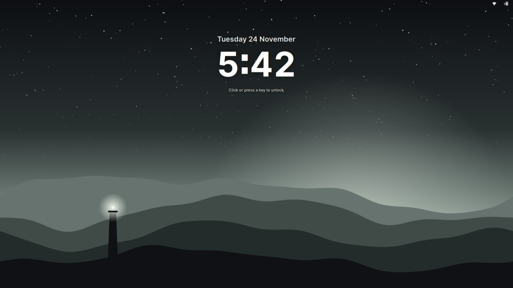
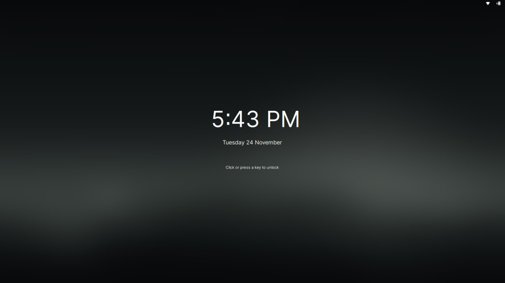
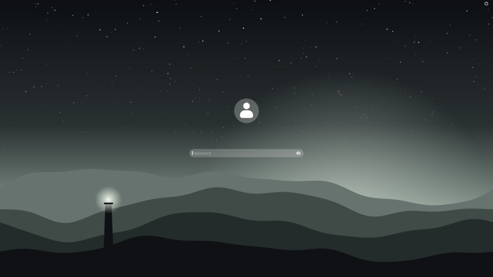
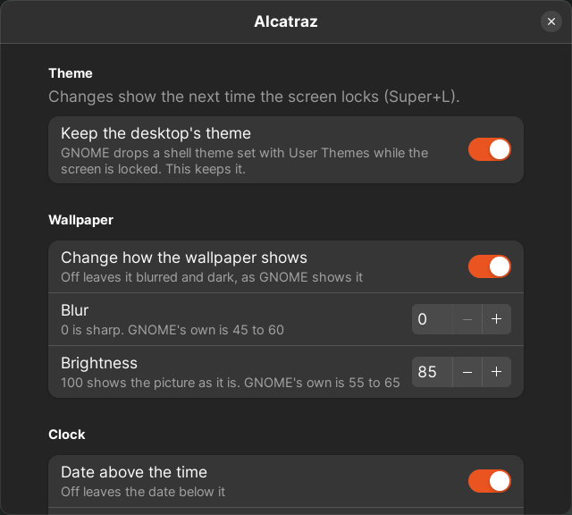

A Mac-style lock screen for GNOME. Your desktop's theme on the lock screen, the wallpaper sharp, and a big clock near the top.

GNOME switches extensions off while the screen is locked, and that includes User Themes, the extension that loads a shell theme. So the lock screen falls back to the default look whatever theme your desktop uses, and shows your wallpaper blurred and dark.
Alcatraz is allowed to stay on while the screen is locked. At the moment of locking it loads your desktop's shell theme, shows the wallpaper sharp, and puts the date above a large clock near the top, without AM or PM. Every part has its own switch.

No timer and no polling. Alcatraz only listens for the screen to lock and to unlock.
In the tests, dressing the lock screen took 50 to 170 milliseconds, mostly loading the theme: the same work User Themes does at every unlock.
Alcatraz does not touch the prompt, its place, or the way you unlock. The clock is only moved where it is painted.
If a GNOME version changes a part of the lock screen that Alcatraz looks for, the lock screen simply stays GNOME's own.
Switched off, even while the screen is locked, the lock screen goes back to GNOME's own at once.
A hidden GNOME Shell is locked and unlocked again and again, and every part is checked: on GNOME 42, 46 and 51, and in the continuous integration on 42 to 51.

Alcatraz needs GNOME 42 or newer. Keeping the theme needs the User Themes extension, the one that sets your shell theme (package gnome-shell-extensions on Debian and Ubuntu, gnome-shell-extension-user-theme on Fedora). The other parts work without it.
From a release: download the zip for your GNOME version from the releases page, alcatraz-gnome42-44 for GNOME 42 to 44 or alcatraz-gnome45-plus for GNOME 45 and later, and install it with GNOME's own tool, which also prepares the settings:
gnome-extensions install --force alcatraz-gnome45-plus.shell-extension.zipLog out and back in, switch Alcatraz on in the Extensions app, and lock the screen with Super+L.
From the source:
git clone https://github.com/saikatnjm/alcatraz.git
cd alcatraz
make installTo remove it: gnome-extensions uninstall alcatraz@saikatnjm.github.io, or make uninstall in the source folder.

| Setting | Default |
|---|---|
| Keep the desktop's theme | on |
| Change how the wallpaper shows | on: blur 0, brightness 85 % |
| Date above the time | on |
| Hide AM and PM | on |
| Move the clock up | on: 12 % from the top |
| Style the clock | on: 96 pt and 20 pt, the desktop's font |
Open them from the Extensions app. Changes show the next time the screen locks.